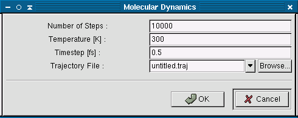

The molecular dynamics feature allows the simulation of the Newtonian mechanics of a molecule. The molecule should be Geometry Optimized before starting the simulation. When the Molecular Dynamics option is selected from the popup menu a dialog box will appear.
This box will contain four fields. The "Number of steps :" is the number of iterations the simulation should continue for. A large number of steps will allow the simulation to cover a greater portion of the conformational space, however it it will also take longer to compute. The default number of steps is 10000.
The second field is the temperature. A higher temperature will mean that the bonds can be stretched and bent further than a lower temperature, thus allowing the molecule to adopt different conformations. The default temperature is 300 K.
The "Time Step" field is the length of time between each step in fentoseconds. A small length of time will be more accurate and provide a more detailed view the the dynamics of the molecule, however a smaller area of conformational space will be shown. The default setting is 0.5 fs.
The "Trajectory File" field is the file where Ghemical will save the data generated by this calculation. You can review the trajecorty file afterwards using the MD Trajectory viewer. The field should typically be changed to a filename related to the molecule you are working with. (ie ethane1.traj). The default setting is untitled.traj.
Once you are done changing the settings press the Ok button to start the calculation. Depending on the molecule and the settings you chose this calculation may take a considerable amount of time.
You will see the bonds of the molecule stretching and bending to adopt different conformations in the graphical window. In the console window the amount of time (in fentoseconds) that the simulation has run for will be printed on each line as well as the temperature in Kelvin (this is calculated from the kinetic energy of the molecule), the potential energy and the total energy (kinetic plus potential energies).
After the calculation has completed you may view it in the MD Trajectory Viewer